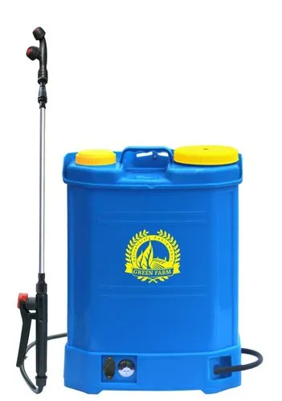

Tractor
Our tractors are designed for durability and power, making them perfect for large-scale farming operations.
- Engine Power: 150-500 HP
- Fuel Efficient
- 4WD for better traction
- Advanced GPS and AutoSteer Technology
- Hydraulic Lift Capacity: 2,000 kg
- Ideal for plowing, hauling, and tilling
Harvester
Our harvesters provide the highest efficiency in crop collection, reducing time and labor costs.
- High capacity grain tank: 14,000L
- Variable Speed Header
- Advanced cleaning system
- Reduced fuel consumption
- Adaptive harvesting technology for all crops
- Comfortable cab with advanced operator controls

Plow
Our plows are engineered to break up tough soil and prepare the land for seeding.
- Adjustable depth for different soil types
- Heavy-duty steel construction
- Available in 2-6 furrow configurations
- Quick-release moldboards
- Improved fuel efficiency
- Durable and resistant to wear

Sprayer
Ensure optimal crop protection with our state-of-the-art sprayers, perfect for large fields and orchards.
- High precision spray control system
- Spray width up to 36 meters
- Variable rate application
- Easy-to-use touchscreen interface
- Improved nozzle technology for better coverage
- Adjustable boom height
Baler
Efficient and reliable balers designed to handle large volumes of hay and straw with ease.
- Produces compact bales (up to 1,200 kg)
- Automatic tie and bale ejection
- Durable construction for long-lasting performance
- Hydraulic bale tensioning system
- Perfect for both round and square bales
- Adjustable bale density

Seeder
Our seeders ensure precise planting and optimal crop growth, reducing seed wastage and improving yields.
- Seed rate adjustment for different crops
- Built-in fertilizer applicator
- Advanced seed metering system
- Wide working width (up to 12 meters)
- Easy calibration and operation
- Precision planting technology

Loader
Versatile loaders that help you move heavy materials like soil, gravel, and farm produce.
- Load Capacity: 1,000 - 3,000 kg
- Hydraulic lifting system
- Available in wheeled and tracked models
- Optional attachments: forks, buckets, grapples
- Low maintenance and easy to operate
- Adjustable boom height for better reach